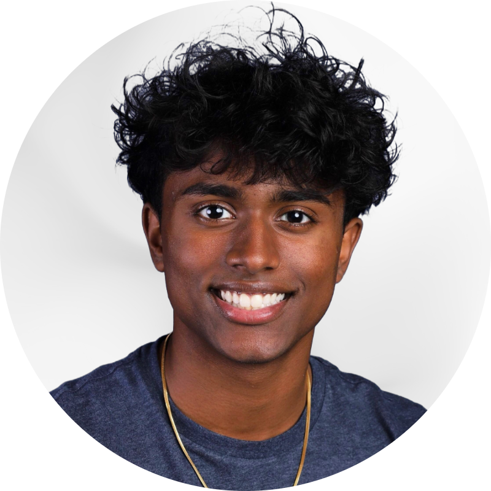

Saatvik Sunilraj
Aspiring aerospace engineer with a focus on sustainable technologies and space exploration
Aspiring aerospace engineer with a focus on sustainable technologies and space exploration
Broad Run High School, Ashburn, VA - Anticipated Grad Year: May 2026
Relevant Coursework: AP Calculus BC, AP Physics C, AP Chemistry, AP Computer Science Principles, Cybersecurity, Robotic Design, Aerospace Science
Programs: Virginia Space Coast Scholar (NASA Wallops), Virginia Aerospace Science and Technology Scholar (NASA Langley), ASSIP at GMU
Selected by NASA Wallops for academic excellence and STEM interest. Participated in a competitive program focused on aerospace missions and space science.
Completed NASA Langley's advanced aerospace coursework and mission design challenge. Collaborated with students statewide on technical aerospace projects.
Engaged in mentored research at GMU's summer program, exploring advanced scientific methods and contributing to real-world research initiatives.
Researched and simulated eco-friendly gas compositions using machine learning in Python to replace SF6, a potent gas with a GWP 23,500 times more than CO2, for insulation in electrical applications.
Proposed and analyzed fuel cell performance to power scientific instruments in microgravity, ensuring reliability and efficiency for future missions.
Developed a phased mission plan for a sustainable lunar base with advanced robotics, efficient resource utilization, and offering a sustainable habitat.
Analyzed resource extraction technologies and strategies for sustainable space mining, advancing our capabilities for future missions and economic opportunities.
Proposed an innovative self-adaptive radiation protection design for the Lunar Gateway, enhancing astronaut safety and mission sustainability in deep space.
August 2024 – Present
September 2022 – Present
February 2023 – March 2025
YAC is a student-led organization of highly motivated teens who reside in Loudoun County. YAC works on special events and community service projects for their peers. YAC also serves as a recognized medium for presenting ideas and opinions of Loudoun County’s youth to the community and its leaders, ensuring that Loudoun’s youth voice is heard by elected officials.